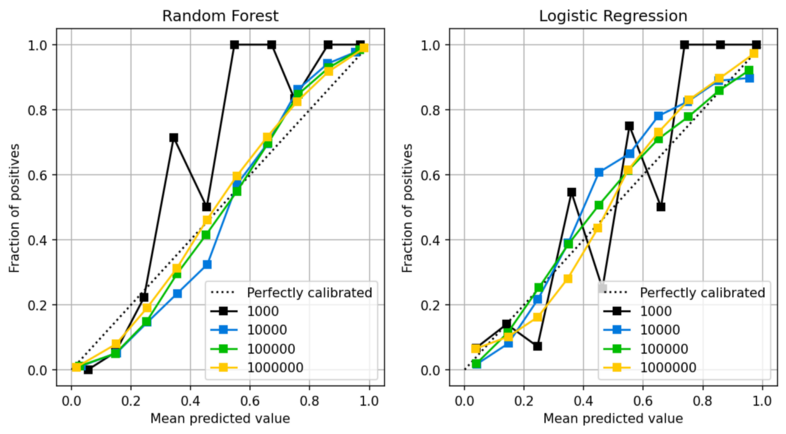
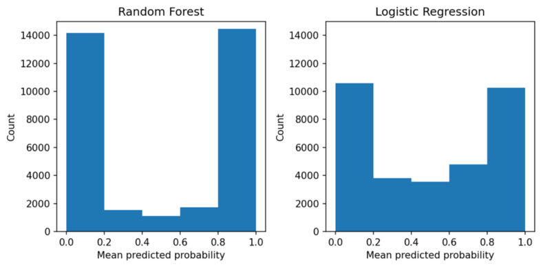
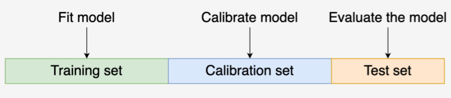
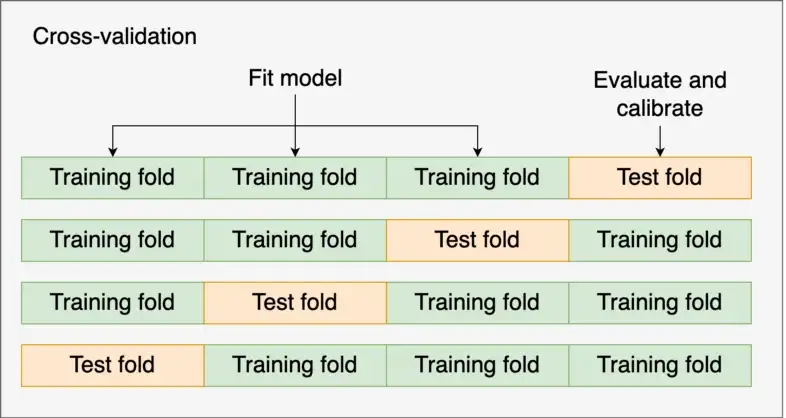

Classification
Misc
- Also see Regression, Logistic
- Guide for suitable baseline models: link
- If you have mislabelled target classes, try AdaSampling to correct the labels (article)
- Sample size requirements
- Logistic Regression: (Harrell, link)
- These are conservative estimates. Sample size estimates assume an event probability of 0.50.
- For just estimating the intercept and a margin of error for predicted probabilities of 0.1
- With no covariates (i.e. population is homogeneous), n = 96
- With 1 categorical covariate, n = 96 for each level of the covariate
- e.g. For gender, you need 96 males and 96 females
- For just estimating the intercept and a margin of error for predicted probabilities of 0.05
- With no covariates (i.e. population is homogeneous), n = 384
- If true probabilities of event (and non-event) are known to be extreme, i.e. \(p \notin [0.2, 0.8]\), n = 246
- For estimating predicted probabilities with 1 continuous predictor
- For a margin of error of 0.1, n = 150
- For a margin of error of 0.07, n = 300
- RF: 200 events per candidate feature (Harrell, link)
- Logistic Regression: (Harrell, link)
- Undersampling non-events(0s) is the popular way to balance the target variable in data sets but other ma be worth exploring while building the model.
- Spline — don’t bin continuous, baseline, adjustment variables, where “baseline” means the patients measurements before treatment. Lack of fit will then come only from omitted interaction effects. (Harrell)
- e.g.: if older males are much more likely to receive treatment B than treatment A than what would be expected from the effects of age and sex alone, adjustment for the additive propensity would not adequately balance for age and sex.
- Also see
- The best information to present to the patient is the estimated individualized risk of the bad outcome separately under all treatment alternatives. That is because patients tend to think in terms of absolute risk, and differences in risks don’t tell the whole story (Harrell)
- A risk difference (RD, also called absolute risk reduction) often means different things to patients depending on whether the base risk is very small, in the middle, or very large.
- Recommended metrics to be reported for medical studies (Harrell). This is perhaps generalizable to any RCT with a binary outcome.
- The distribution of Risk Difference (RD)
- Covariate-Adjusted OR
- Adjusted marginal RD (mean personalized predicted risk as if all patients were on treatment A minus mean predicted risk as if all patients were on treatment B) (emmeans?)
- Median RD
Diagnostics
- Also see
- Diagnostics, Classification
- Regression, Logistic >> Diagnostics
- “During the initial phase of model building, a good strategy for data sets with two classes is to focus on the AUC statistics from these curves instead of metrics based on hard class predictions. Once a reasonable model is found, the ROC or precision-recall curves can be carefully examined to find a reasonable cutoff for the data and then qualitative prediction metrics can be used.” – 3.2.2 Classification Metrics” Kuhn and Kjell
- “Stable” AUC requirements for 0/1 outcome:
- Paper: Modern modelling techniques are data hungry: a simulation study for predicting dichotomous endpoints | BMC Medical Research Methodology | Full Text
- Logistic Regression: 20 to 50 events per predictor variable
- Random Forest and SVM: greater than 200 to 500 events per predictor variable
Class Imbalance
Misc
- Also see
- Model Building, tidymodel >> Recipe >> up/down-sampling
- Surveys, Analysis >> Modeling >> Tidymodels >> Importance weights
- Paper: Subsampling without calibration will likely be more harmful than without subsampling
- Subsampling can refer to up/oversampling or down/undersampling.
- It is perfectly ok to train a model on 1M negatives and 10K positives (i.e. plenty of events), as long as you avoid using accuracy as a metric
- 1K to 10K events might be enough for the ML algorithm to learn from
- For a RF model: 200 events per candidate feature (Harrell, link)
- Unless recalibration is applied, applying subsampling to correct class imbalance will lead to overpredicting the minority class (discrimination) and worse calibration when using logistic regression or ridge regression (paper)
- Paper used random undersampling (RUS), random oversampling (ROS), and SMOTE (Synthetic Minority Oversampling Technique)
- Event Fractions: 1%, 10%, 30%
- N: 2500, 5000; p: 3, 6, 12, 24
- “We anticipate that risk miscalibration will remain present regardless of type of model or imbalance correction technique, unless the models are recalibrated. However, class imbalance correction followed by recalibration is only worth the effort if imbalance correction leads to better discrimination of the resulting models.”
- They used what looked to be Platt Scaling for recalibration
- Also see Model Building, tidymodels >> Tune >> Tune Model with Multiple Recipes for an example of how downsampling (w/o calibration) + glmnet affects class prediction and GOF metrics
- Also see
Issues
- Using Accuracy as a metric
- If the positivity rate is just 1%, then a naive classifier labeling everything as negative has 99% accuracy by definition
- If you’ve used subsampling, then the training data is not the same as the data used in production
- Low event rate
- If you only have 10 to 100 positive samples, the model may easily memorize these samples, leading to an overfit model that generalized poorly
- May result in large CIs for your effect estimate (see Gelman post)
- Using Accuracy as a metric
Check Imbalance
data %>% count(class) %>% mutate(prop = n / sum(n)) %>% pretty_print()Downsampling
- Use cases for downsampling the majority class
- when the training data doesn’t fit into memory (and your ML training pipeline requires it to be in memory), or
- when model training takes unreasonably long (days to weeks), causing too long iteration cycles, and preventing you from iterating quickly.
- Using a domain knowledge filter for downsampling
- a simple heuristic rule that cuts down most of the majority class, while keeping nearly all of the minority class.
- e.g. if a rule can retain 99% of positives but only 1% of the negatives, this would make a great domain filter
- Examples
- credit card fraud prediction: filter for new credit cards, i.e. those without a purchase history.
- spam detection: filter for Emails from addresses that haven’t been seen before.
- e-commerce product classification: filter for products that contain a certain keyword, or combination of keywords.
- ads conversion prediction: filter for a certain demographic segment of the user population.
- a simple heuristic rule that cuts down most of the majority class, while keeping nearly all of the minority class.
- Use cases for downsampling the majority class
CV
- It is extremely important that subsampling occurs inside of resampling. Otherwise, the resampling process can produce poor estimates of model performance.
- data leakage: if you first upsample the data and then split the data into training (aka analysis set) and validation (aka assessment set) folds, your model can simply memorize the positives from the training data and achieve artificially strong performance on the validation data, causing you to think that the model is much better than it actually is.
- The subsampling process should only be applied to the analysis (aka training) set. The assessment (aka validation) set should reflect the event rates seen “in the wild.”
- Does {recipe} handle this correctly?
- Process
- Subsample the data only in the analysis set
- Perform CV algorithm selection and tuning using a suitable metric for class imbalance
- Use same metric to get score on the test set
- It is extremely important that subsampling occurs inside of resampling. Otherwise, the resampling process can produce poor estimates of model performance.
ML Methods
- Synthetic Data Approaches
- TabDDPM: Modeling Tabular Data with Diffusion Models (Raschka Thread)
- Categorical and Binary Features: adds uniform noise via multinomial diffusion
- Numerical Features: adds Gaussian noise using Gaussian diffusion
- Synthetic Data Vault (Docs)
- Data generated with variational autoencoders adapted for tabular data (TVAE) (paper)
- Can Synthetic Data Boost Machine Learning Performance?
- TabDDPM: Modeling Tabular Data with Diffusion Models (Raschka Thread)
- Imbalanced Classification via Layered Learning (ICLL)
- For code, see article
- A hierarchical model composed of two levels:
- Level 1: A model is built to split easy-to-predict instances from difficult-to-predict ones.
- The goal is to predict if an input instance belongs to a cluster with at least one observation from the minority class.
- Level 2: We discard the easy-to-predict cases. Then, we build a model to solve the original classification task with the remaining data.
- The first level affects the second one by removing easy-to-predict instances from the training set.
- Level 1: A model is built to split easy-to-predict instances from difficult-to-predict ones.
- In both levels, the imbalanced problem is reduced, which makes the modeling task simpler.
- Synthetic Data Approaches
Tuning parameters (last resort)
- XGBoost and LightGBM have a parameter called
scale_pos_weight, which up-weighs positive samples when computing the gradient at each boosting iteration - Unlikely to have a major effect and probably won’t generalize well.
- XGBoost and LightGBM have a parameter called
Calibration
- Calibrated- When the predicted probabilities from a model match the observed distribution of probabilities for each class.
- Calibration Plots visualize this comparison of distributions
- Calibration mesasure are important for validating a predictive model.
- Logistic Regression models are usually well-calibrated, but most ML and DL model predicted probabilities aren’t directly produced by the algorithms and aren’t usually calibrated
- RF models can also benefit from calibration although given enough data, they are already pretty well calibrated
- SVM, Naive Bayes, boosted tree algorithms, and DL models benefit most from calibration
- An unintended consequence of applying calibration modeling can be the worsening of calibration for models that are already well calibrated
- If a model isn’t calibrated, then the magnitude of the predicted probability cannot be interpreted as the likelihood of an event
- e.g. If 0.66 and 0.67 are two predicted probabilities from an uncalibrated xgboost model, the 0.67 prediction cannot be interpreted as more likely to be an event than the 0.66 prediction.
- Miscalibrated predictions don’t allow you to have more confidence in a label with a higher probability than a label with a lower probability.
- See (below) the introduction in the paper, “A tutorial on calibration measurements …” for examples of scenarios where calibration of risk scoring model is essential. If you can’t trust the predicted probabilities (i.e. risk) then decision-making is impossible.
- also this paper which also explains some sources of miscalibration (e.g. dataset from region with low incidence, measurement error, etc.)
- Even if a model isn’t caibrated and depending on the metric, it can still be more accurate than a calibrated model.
- Poor calibration may make an algorithm less clinically useful than a competitor algorithm that has a lower AUC but is well calibrated (paper)
- Calibration doesn’t affect the AUROC (does not rely on predicted probabilities) but does affect the Brier Score (does rely on predicted probabilities) (paper)(Harrell)
- Since thresholds are based on probabilities, I don’t see how a valid, optimized threshold can be established for an uncalibrated model
- Wonder how this affects model-agnostic metrics, feature importance, shap, etc.
Misc
- Also see Diagnostics, Classification >> Calibration
- Packages
- {probably} - tidymodels calibration package
- Calibrating Binary Probabilities - Nice tutorial
- {probably} - tidymodels calibration package
- Notes from:
- How and When to Use a Calibrated Classification Model with scikit-learn
- Can I Trust My Model’s Probabilities? A Deep Dive into Probability Calibration
- Python, multiclass example
- A tutorial on calibration measurements and calibration models for clinical prediction models (paper)
- Calibration curves for nested cv (post)
- For calibrated models, sample size affects the how well they’re calibrated
- Even for a logistic model, N > 1000 is desired for good calibration
- For a rf, closer to N = 10,000 is probably needed.
- Distributions of predicted probabilities
- Random Forest pushes the probabilities towards 0.0 and 1.0, while the probabilities from the logistic regression are less skewed.
- Decision Trees are even more skewed than RF
- Says how rare a prediction is.
- In a rf, really low or high probability predictions aren’t rare. So, if the model gives you a 0.93, you shouldn’t interpet it the way you normally would such a high probability (i.e. high certainty), because a rf inherently pushes its probabilities towards 0 and 1.
Basic Workflow
- Misc
- Ideally you’d want each model (i.e. tuning parameter combination) being scored in a CV or a nested CV to have its own calibration model, but it’s not practical. But also, it’s unlikely an algorithm with a slightly different parameter value combination with have a substantially different predicted probability distribution, and it’s the algorithm itself that’s the salient factor. Therefore, for now, I’d go with 1 calibration model per algorithm.
- Process
- Split data into Training, Calibration, and Test
- For each algorithm, train the algorithm on the Training set, and create the calibration model using it and the Calibration set.
- Each algorithm with have it’s own calibration model
- See below, Example: AdaBoost in Py using CV calibrator
- I like sklearn’s ideas for training a calibration model
- Use the Training set for CV or Nested CV
- For each split during CV or Nested CV (outer loop)
- Train the algorithm on the training fold, predict on the validation fold, calibrate predictions with calibration model, score the calibrated predictions for that fold
- The calibration model could be used in the tuning process in the inner loop of Nested CV as well
- Scores should include calibration metrics (See Diagnostics, Classification >> Calibration >> Basic Workflow)
- Train the algorithm on the training fold, predict on the validation fold, calibrate predictions with calibration model, score the calibrated predictions for that fold
- The rest is normal CV/Nested CV procedure
- i.e. average scores across the splits then select the algorithm with the best score. Predict and score algorithm on the Test set
- See Calibration curves for nested cv for details and code on averaging calibration curves
Methods

- Misc
- TLDR; Both Platt Scaling and Isotonic Regression methods are the essentially the same except:
- Platt Scaling uses a logistic regression model as the calibration model
- Isotonic Regression uses an isotonic regression model on ordered data as the calibration model
- TLDR; Both Platt Scaling and Isotonic Regression methods are the essentially the same except:
- Platt Scaling
Misc
- Suitable for smaller data and for calibration curves with the S-shape.
- May fail when model is already well calibrated (e.g. logistic regression models)
- Performs best under the assumption that the predicted probabilities are close to the midpoint and away from the extremes
- So, might be bad for tree models but okay for SVM, Naive Bayes, etc.
Process
- Split data into Training, Calibration, and Test Sets
- Train your model on the Training Set
- Get the predicted probabilities from your model on the Test Set
- Fit a logistic regression using your model’s predicted probabilities for the Calibration Set as the predictor and the outcome variable in the Calibration Set as the outcome
- Calibrated probabilities are the predicted probabilities of the LR model using your model’s predicted probabilites on the Test set as new data.
Example: SVM in R
svm_platt_recal = svm_platt_recal_func(model_fit, calib_dat, test_preds, test_dat) svm_platt_recal_func = function(model_fit, calib_dat, test_preds, test_dat){ # Predict on Calibration Set cal_preds_obj <- predict(model_fit, calib_dat[, -which(names(calib_dat) == 'outcome_var')], probability = TRUE) # e1071 has a funky predict output; just getting probabilities cal_preds <- as.data.frame(attr(cal_preds_obj, 'probabilities')[, 2]) # Create calibration model cal_obs_preds_df = data.frame(y = calib_dat$outcome_var, yhat = cal_preds[, 1]) calib_model <- glm(y ~ yhat, data = cal_obs_preds_df, family = binomial) # Recalibrate classifiers predicted probabilities on the test set colnames(test_preds) <- c("yhat") recal_preds = predict(calib.model, test_preds, type='response') return(recal_preds) }- See Istotonic Regression for “model_fit”, “calib_dat”, “test_preds”, and “test_dat”
Example: AdaBoost in py
X_, X_test, y_, y_test = train_test_split(X, y, test_size=0.3, random_state=42) X_train, X_calib, y_train, y_calib = train_test_split(X_, y_, test_size=0.4, random_state=42) # uncalibrated model clf = AdaBoostClassifier(n_estimators=50) y_proba = clf.fit(X_train, y_train).predict_proba(X_test) # calibrated model calibrator = LogisticRegression() calibrator.fit(clf.predict_proba(X_calib), y_calib) y_proba_calib = calibrator.predict_proba(y_proba)
- Isotonic Regression
More complex, requires a lot more data (otherwise it may overfit), but can support reliability diagrams with different shapes (is nonparametric).
- Tried on palmer penguins (n = 332) and almost all the probabilites were pushed to the edges
- Tried on mlbench::PimaIndiansDiabetes (n = 768). Probabilites were mostly clumped into 3 modes.
- Paper used a simulated (n = 5000) dataset. Probabilities moved a little more towards the center but the movement was much less dramatic that the other two datasets.
- I didn’t calculate brier scores but I’d guess you’d need over a 1000 or so observations for this method to have a significantly positive effect.
Lacks continuousness, because the fitted regression function is a piecewise function.
- So, a slight change in the uncalibrated predictions can result in dramatic difference in the calibrated predictions (i.e. a change in step)
Process
- Splits: train (50%), Calibration (25%), Test (25%)
- Train classifier model on train data
- Get predictions from the classifier on the test data
- Create calibration model dataset from the calibration data
- Get predictions from the classifier on the calibration data
- Create df with observed outcome of calibration data and predictions on calibration data
- Order df rows according the predictions column
- Lowest to largest probabilities in the paper but I’m not sure it matters
- FIt calibration model
- Fit isotonic regression model on calibration model dataset
- Create a step function using the isotonic regression fitted values and the predictions on the calibration data
- Calibrate the classifier’s predictions on the test set with the step function
Example: SVM in R
library(dplyr) library(e1071) data(PimaIndiansDiabetes, package = "mlbench") # isoreg doesn't handle NAs # e1071::svm doesn't identify the event correctly in non-0/1 factor variables dat_clean <- PimaIndiansDiabetes %>% mutate(diabetes = ifelse(as.numeric(diabetes) == 2, 1, 0)) %>% rename(outcome_var = diabetes) %>% tidyr::drop_na() # Data splits Training, Calibration, Test (50% - 25% - 25%) smp_size <- floor(0.50 * nrow(dat_clean)) val_smp_size = floor(0.25 * nrow(dat_clean)) train_idx <- sample(seq_len(nrow(dat_clean)), size = smp_size) train_dat <- dat_clean[train_idx, ] test_val_dat <- dat_clean[-train_idx, ] val_idx <- sample(seq_len(nrow(test_val_dat)), size = val_smp_size) calib_dat <- test_val_dat[val_idx, ] test_dat <- test_val_dat[-val_idx, ] rm(list=setdiff(ls(), c("train_dat", "calib_dat", "test_dat"))) # Fit classifier; predict on Test Set # e1071::svm needs a factor outcome, probability=T to output probabilities model_fit <- svm(factor(outcome_var) ~ ., data = train_dat, kernel = "linear", cost = 10, scale = FALSE, probability = TRUE) test_preds_obj <- predict(model_fit, test_dat[, -which(names(test_dat) == 'outcome_var')], probability = TRUE) # e1071 has a funky predict output; just getting probabilities test_preds <- as.data.frame(attr(test_preds_obj, 'probabilities')[, 2]) # Predict on Calibration Set cal_preds_obj <- predict(model_fit, calib_dat[, -which(names(calib_dat) == 'outcome_var')], probability = TRUE) # e1071 has a funky predict output; just getting probabilities cal_preds <- as.data.frame(attr(cal_preds_obj, 'probabilities')[, 2]) # Create Calibration Model dataset cal_obs_preds_mtx = cbind(y = calib_dat$outcome_var, yhat = cal_preds[, 1]) # order training data by predicted probabilities iso_train_mtx <- cal_obs_preds_mtx[order(cal_obs_preds_mtx[, 2]), ] # Fit Calibration Model # (predicted probabilities, observed outcome) calib_model <- isoreg(iso_train_mtx[, 2], iso_train_mtx[, 1]) # yf are the fitted values of the outcome variable stepf_data <- cbind(calib_model$x, calib_model$yf) step_func <- stepfun(stepf_data[, 1], c(0, stepf_data[, 2])) # recalibrate classifiers predicted probabilities on the test set recal_preds <- step_func(test_preds[, 1]) head(recal_preds, n = 20) hist(recal_preds) hist(test_preds[, 1])isoregdoesn’t handle NAs- For a binary classification model that outputs probabilities,
e1071::svmneeds:- factored 0/1 outcome variable
- probability = TRUE
Example: AdaBoost in Py using CV calibrator
from sklearn import datasets from sklearn import metrics from sklearn.model_selection import train_test_split from sklearn.ensemble import AdaBoostClassifier from sklearn.calibration import CalibratedClassifierCV from sklearn.model_selection import cross_val_predict from sklearn_evaluation import plot X, y = datasets.make_classification(10000, 10, n_informative=8, class_sep=0.5, random_state=42) X_train, X_test, y_train, y_test = train_test_split(X, y, test_size=0.3, random_state=42) clf = AdaBoostClassifier(n_estimators=100) clf_calib = CalibratedClassifierCV(base_estimator=clf, cv=3, ensemble=False, method='isotonic') clf_calib.fit(X_train, y_train) y_proba = clf_calib.predict_proba(X_test) y_proba_base = clf.fit(X_train, y_train).predict_proba(X_test) fig, ax = plt.subplots() plot.calibration_curve(y_test, [y_proba_base[:, 1], y_proba[:, 1]], clf_names=["Uncalibrated", "Calibrated"], n_bins=20) fig.set_figheight(4) fig.set_figwidth(6) fig.set_dpi(150)CalibratedClassifierCVhas both platt scaling (“sigmoid”)(default) and isotonic (“isotonic”) calibration methods (Docs)- Calibration model is built using the test fold (aka validation fold)
 ensemble=True- For each cv split, the base estimator is fit on the training fold, and the calibration model is built using the “test” fold (aka validation fold)
- The test (aka validation) fold is the calibration data described in the isotonic and platt scaling process sections above
- For prediction, predicted probabilities are averaged across these individual calibrated classifiers.
- For each cv split, the base estimator is fit on the training fold, and the calibration model is built using the “test” fold (aka validation fold)
ensemble=False- LOO CV is performed using
cross_val_predict, and those predictions are used to train the calibration model. - The base estimator is trained using all the data (i.e. training and test (aka validation)).
- For prediction, there is only one classifier and calibration model combo.
- The benefit is that it’s faster, and since there’s only one combo, it’s smaller in size as compared to ensemble = True which is k combos. (not as accurate or as well-calibrated though)
- LOO CV is performed using
- Other forms
- For logistic regression models, adjustment using the Calibration Intercept (and Calibration Slope)
- Seems similar to Platt Scaling, but has strong overfitting vibes so caveat emptor
- For calculating the values, see Diagnostics, Classification >> Calibration >> Evaluation of Calibration Levels >> Weak >> Intercept, Slope
- paper, see supplemental material
- Procedure
- The calibration intercept is added to the fitted model’s intercept
- The calibration slope is multiplied times all (nonexponentiated) coefficients of the fitted model (including interactions)
- Predictions are then calculated using the new formula
- Example
- From How We Built Our COVID-19 Estimator
- Target: Risk of Death (probabilities)
- Predictors: Age, Gender, Comorbidities
- Model: XGBoost
- “Every time our model makes a prediction, we compare the result to what the model would have returned for an individual of the same age and sex and only one of the listed comorbidities, or none at all. If the predicted risk is lower than the risk for a comorbidity taken on its own—such as, say, the estimated risk for heart disease alone being greater than the risk for heart disease and hypertension, or the risk for metabolic disorders being lower than the risk of someone with no listed comorbidities—our tool delivers the higher number instead. We also smoothed our estimates and confidence intervals, using five-year moving averages by age and gender.”
- For logistic regression models, adjustment using the Calibration Intercept (and Calibration Slope)
Feature Importance
Misc
- See notebook and bookmarks for proper algorithms (e.g. permutation importance) to specify for variable importance plots
- Permutation Importance
- Permutation importance is generally considered as a relatively efficient technique that works well in practice
- Importance of correlated features may be overestimated
- If you have highly correlated features, use
partykit::varimp(conditional = TRUE)
- If you have highly correlated features, use
- Process
- Take a model that was fit to the training dataset
- Estimate the predictive performance of the model on an independent dataset (e.g., validation dataset) and record it as the baseline performance
- For each feature i:
- randomly permute feature column i in the original dataset
- record the predictive performance of the model on the dataset with the permuted column
- compute the feature importance as the difference between the baseline performance (step 2) and the performance on the permuted dataset
- Variable Importance plots can be useful for model explaining to clients. Ex. Real estate: variables that are most influential in determining housing price are aspects of a house that could be emphasized by Realtors to their clients.
- Make sure to use “LossFunctionChange” importance type in Catboost.
- Looks at how much the loss function changes when a feature is excluded from the model.
- Default method capable of giving importance to random noise
- Requires evaluation on a testing set
xgboost
xg_wf_best <- xg_workflow_obj %>% finalize_workflow(select_best(xg_tune_obj)) xg_fit_best <- xg_wf_best %>% fit(train) importances <- xgboost::xgb.importance(model = extract_fit_engine(xg_fit_best)) importances %>% mutate(Feature = fct_reorder(Feature, Gain)) %>% ggplot(aes(Gain, Feature)) + geom_point() + labs(title = "Importance of each term in xgboost", subtitle = "Even after turning direction numeric, still not *that* important")Using vip package
library(vip) # xg_wf = xgboost workflow object fit(xg_wf, whole_training_set) %>% pull_workflow_fit() %>% vip(num_features = 20)glmnet
.png)
lin_trained <- lin_wf %>% finalize_workflow(select_best(lin_tune)) %>% fit(train) # or split_obj, test_dat, etc. lin_trained$fit$fit %>% broom::tidy %>% top_n(50, abs(estimate)) %>% filter(term != "(Intercept)") %>% mutate(ter = fct_reorder(term, estimate)) %>% ggplot(aes(estimate, term, fill = estimate > 0)) + geom_col() + theme(legend.position = "none")